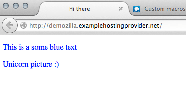
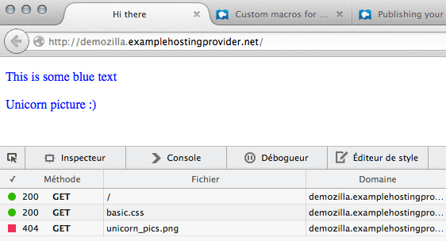
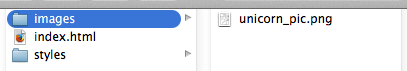
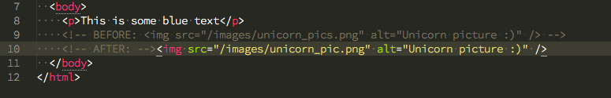
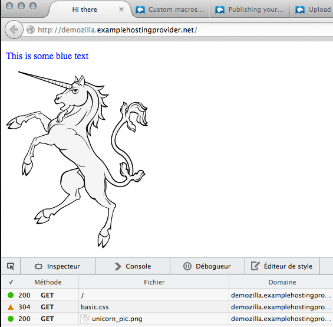
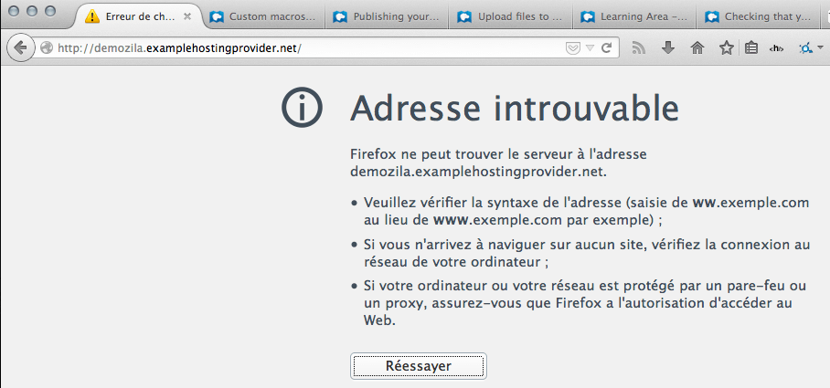
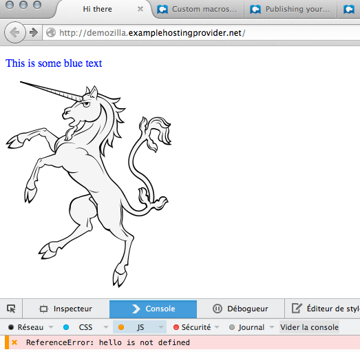
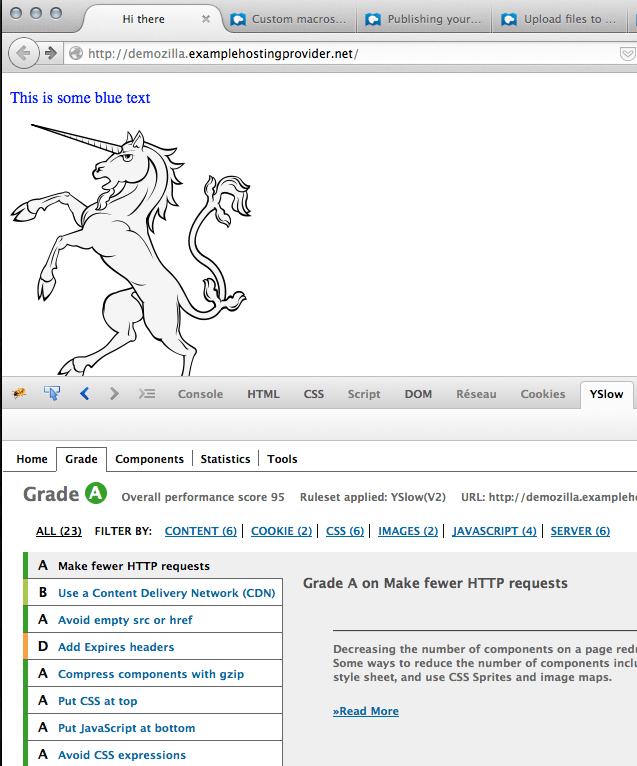

In this article we go over various troubleshooting steps for a website and some basic actions to take in order to solve these issues.
| Prerequisites: | You need to know how to upload files to a web server. |
|---|---|
| Objective: | You will learn how to diagnose and resolve some basic issues you can run into with your website. |
So you've published your website online? Very good! But are you sure it works properly?
A distant web server often behaves quite differently from a local one, so it's a good idea to test your website once it's online. You might be surprised at how many problems come up: images don't show up, pages don't load or load slowly, and so on. Most of the time it's no big deal, just a simple mistake or an issue with your web hosting configuration.
Let's see how to diagnose and solve those problems.
There is no active learning available yet. Please, consider contributing.
If you want to know whether your website works correctly, the first thing to do is fire up your browser and go to the page you want to test.
Let's look at our personal website, http://demozilla.examplehostingprovider.net/. It's not showing the image we expected!

Open Firefox's Network tool (Tools ➤ Web Developer ➤ Network) and reload the page:

There's the problem, that "404" at the bottom. "404" means "resource not found", and that's why we didn't see the image.
Servers respond with a status message whenever they receive a request. Here are the most common statuses:
As beginners checking our (simple) website, we'll deal most often with 200, 304, 403, and 404.
So what went wrong?

At first glance, the image we asked for seems to be in the right place... but the Network tool reported a "404". It turns out that we made a typo in our HTML code: unicorn_pics.png rather than unicorn_pic.png. So correct the typo in your code editor by changing the image's src attribute:

Save, push to the server, and reload the page in your browser:

There you go! Let's look at the {{Glossary("HTTP")}} statuses again:
/ and for unicorn_pic.png means that we succeeded in reloading the page and the image.basic.css means that this file has not changed since the last request, so the browser can use the file in its cache rather than receiving a fresh copy.So we fixed the error and learned a few HTTP statuses along the way!
The most frequent errors that we find are these:
We wanted to type http://demozilla.examplehostingprovider.net/ but typed too fast and forgot an “l”:

The address cannot be found. Indeed.
Many times the error just results just from a typo, but sometimes maybe you either forgot to upload a resource or you lost your network connection while you were uploading your resources. First check the spelling and accuracy of the file path, and if there's still a problem, upload your files again. That will likely fix the problem.
Someone (possibly you) added a script to the page and made a mistake. This will not prevent the page from loading but you will feel something went wrong.
Open the console (Tools ➤ Web developer ➤ Web Console) and reload the page:

In this example, we learn (quite clearly) what the error is, and we can go fix it (we will cover JavaScript in another series of articles).
We have listed a few simple ways to check that your website works properly, as well as the most common errors you may run across and how to fix them. You can also test if your page meets these criteria:
Does the page load fast enough? Resources like WebPageTest.org or browser add-ons like YSlow can tell you a few interesting things:

Grades go from A to F. Our page is just small and meets most criteria. But we can already note it would have been better to use a {{Glossary("CDN")}}. That doesn't matter very much when we're only serving one image, but it would be critical for a high-bandwidth website serving many thousands of images.
ping is a useful shell tool that tests the domain name you provide and tells you if the server's responding or not:
$ ping mozilla.org PING mozilla.org (63.245.215.20): 56 data bytes 64 bytes from 63.245.215.20: icmp_seq=0 ttl=44 time=148.741 ms 64 bytes from 63.245.215.20: icmp_seq=1 ttl=44 time=148.541 ms 64 bytes from 63.245.215.20: icmp_seq=2 ttl=44 time=148.734 ms 64 bytes from 63.245.215.20: icmp_seq=3 ttl=44 time=147.857 ms ^C --- mozilla.org ping statistics --- 4 packets transmitted, 4 packets received, 0.0% packet loss round-trip min/avg/max/stddev = 147.857/148.468/148.741/0.362 ms
Just keep in mind a handy keyboard shortcut: Ctrl+C. Ctrl+C sends an “interrupt” signal to the runtime and tells it to stop. If you don't stop the runtime, ping will ping the server indefinitely.
Congratulations, your website is up and running for anyone to visit. That's a huge achievement. Now, you can start digging deeper into various subjects.